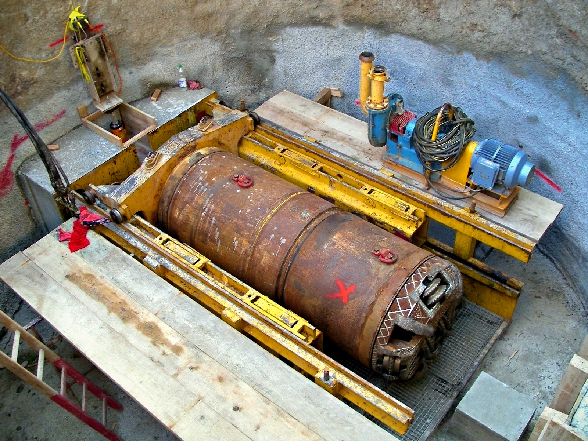
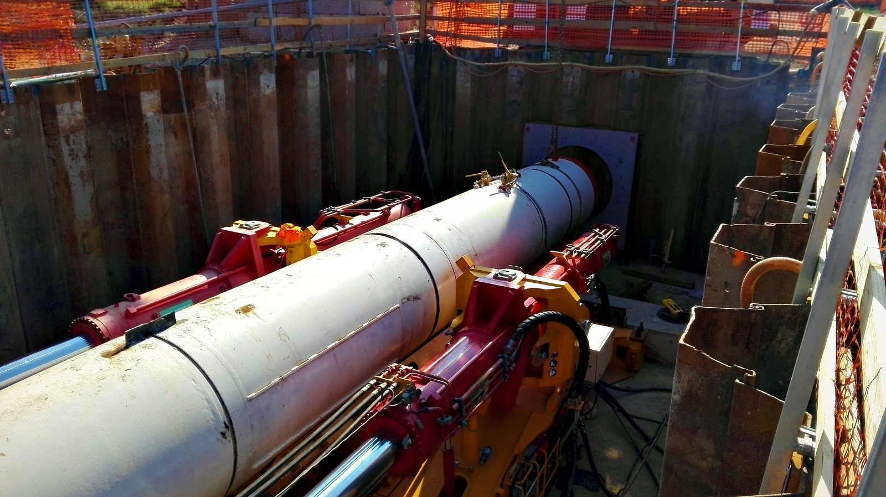
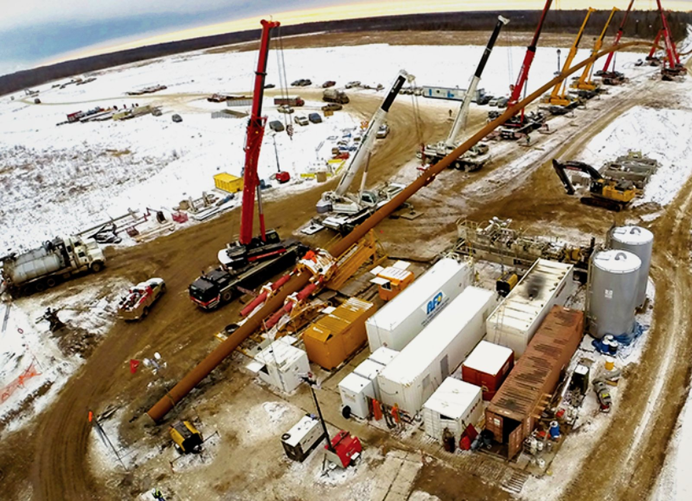
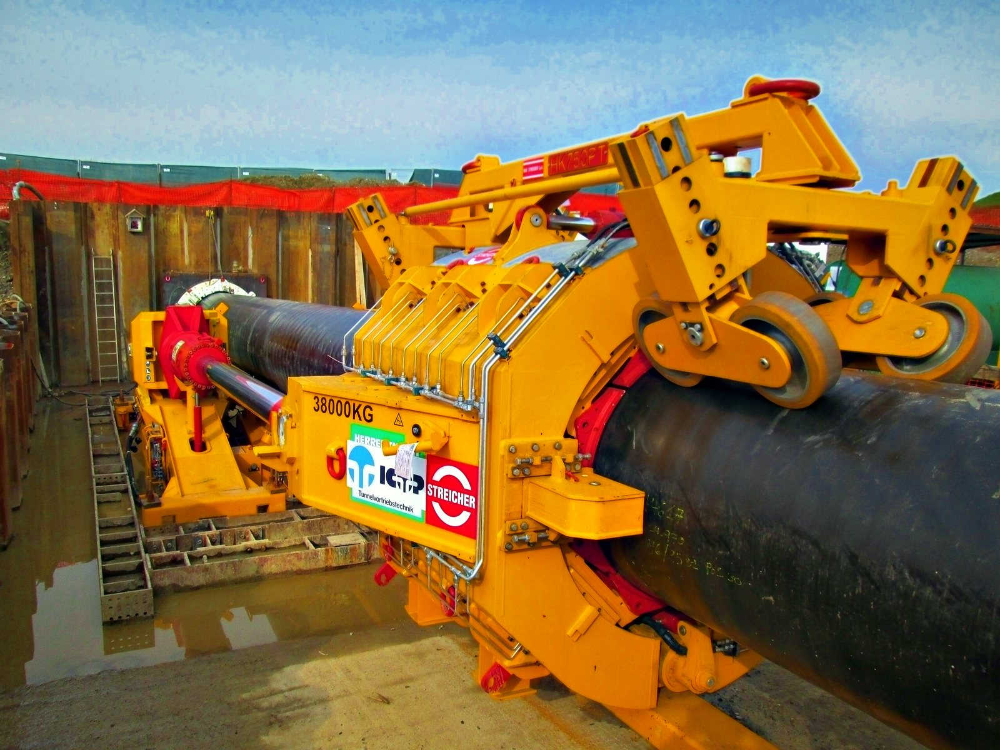
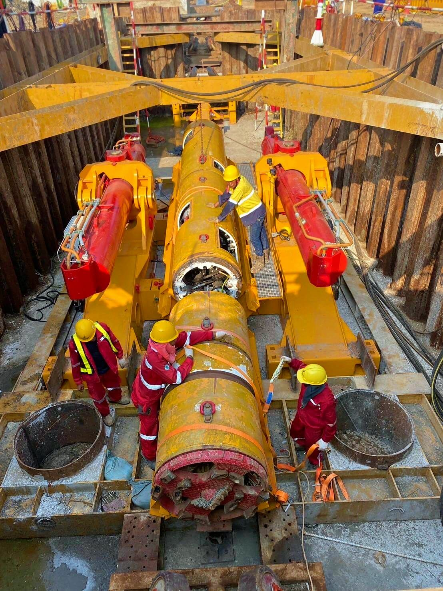

HDD & Microtunneling
Trenchless crossings under rivers, roads, railways and sensitive ground.
The right crossing method for every obstacle
Where a pipeline meets a major river, highway, railway or protected area, open-cut trenching is often not possible or not permitted. Trenchless methods install the pipe beneath the obstacle without disturbing the surface between the entry and exit points.
ICON works with reputable HDD and microtunneling contractors to deliver safe, cost-effective solutions for any pipeline crossing. We manage the crossing as part of the mainline: method selection, interface with the spread, pipe string fabrication and testing, pullback or jacking support, tie-ins and reinstatement, under one schedule and one QHSE standard.
- Crossing method selection and feasibility review
- Management of specialist HDD and microtunneling partners
- Welding, coating and pre-testing of the crossing pipe
- Launch and reception shafts, pullback support and pipe handling
- Tie-in to the mainline, final hydrotest and reinstatement

Photo: Sah die erde, CC BY-SA 3.0
Two ways under the river
 Photo: LKyle89, CC BY-SA 4.0
Photo: LKyle89, CC BY-SA 4.0

Horizontal Directional Drilling
A steerable drill head bores a curved path beneath the obstacle. Once it exits on the far side, the hole is enlarged by reaming, then the pipe string is pulled back through it.
HDD is the most widely used trenchless method for long pipeline crossings of rivers, highways and environmentally sensitive areas. The complete crossing string is welded, coated and pre-tested along the route before drilling starts, so the full length is pulled back in a single continuous operation.
- Long crossings with minimal surface disturbance
- Deep profile below scour depth and riverbed
- Entry and exit points only; no deep shafts required

Photo: UgoLazzarini, CC BY-SA 4.0
Microtunneling
A remotely controlled tunnel boring machine is pushed forward by hydraulic jacks in the launch shaft while its cutting face excavates the ground.
When the jacks reach the end of their stroke, they retract and the next pipe section is lowered into the shaft and jacked in behind the machine. The pipe carries the jacking force and becomes the finished line. Laser guidance keeps the drive on line and level, and slurry support at the face makes microtunneling suitable for soft and water-bearing ground. Fitted with a mixed-ground cutterhead and disc cutters, the machine can also cut through mixed-face conditions, where soil, cobbles, boulders and rock meet at the tunnel face, in places where open cut or HDD is difficult.
- High accuracy for line and grade
- Continuous face support in unstable or water-bearing ground
- Surface disturbance limited to the launch and reception shafts
Choosing the method
Each crossing is assessed individually. As a general guide:
| Method | How it works | Typical use |
|---|---|---|
| HDD | Pilot hole, reaming, full pipe string pulled back | Long crossings of rivers, highways and protected areas in stable ground |
| Microtunneling | Jacked tunnel machine; pipe sections pushed in behind it | Precise, straight crossings in soft, water-bearing or mixed ground |
| Jack and bore (auger boring) | Steel casing advanced with an auger; carrier pipe placed inside on spacers | Short, straight crossings under roads and rail embankments |
| Pipe ramming | Open-ended casing driven by a pneumatic hammer | Short crossings under embankments, including rocky fill |
| Open cut | Excavate, lay and backfill with traffic or flow diversion | Minor roads, ditches and watercourses where permitted |
Trenchless crossings in practice



